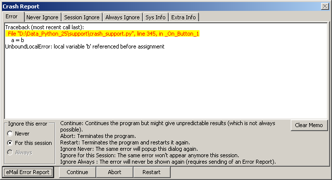
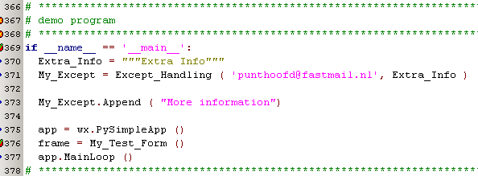
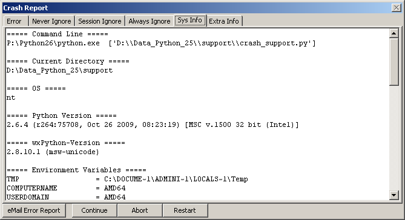

Bug Reporter  (februari 2010)
(februari 2010)
Introduction
Bug Reporter is a module, which gives the users an easy way to report bugs, by collecting all relevant data, and preparing an email to the author of the program. Bug Reporter also allows the user to ignore each bug, either for this session or for ever. Most non-GUI programs can't be continued, but with GUI programs the program can be continued, although the results might be unpredictable. The ideas for this module comes from madExcept , a crash reporter for Delphi, C, C++.
Some features
Some future plans
Bug Discovered
When an error occurs, the following dialog (or a simpler one, with just the error tab) will appear, and the user has the possibility to send a crash report to the author, and decide if the program should be continued, aborted or restarted. The user can also determine if he doesn't wants to see this error again, either in this session only or even in all future sessions (the latter requires sending of an Crash Report)

Using
Using Bug reporter is very simple (see picture below):
line 371: start the exception hook, you only need to specify the mail-address.
Note that the exception hook is created before the wx.App is created, so it will also catch errors in the creation of My_Test_Form. In the latter case Except_Handling will create it's own GUI-loop and in this case it's not possible ( and also not meaningful) to continue the program if indeed an error occurs in the My_Test_Form creation.
line 373: at any moment in your program, you can extend the extra information text, that will be sent by the email. So you add extra information about the version, the classes created / used, methods called etc.

System Information
At the moment the following system information is collected, and send as information with the email:

Always Ignore
This is a list of errors, maintained in a file, located in the main path, with the name of the main file but with the extension ".tb_cfg"